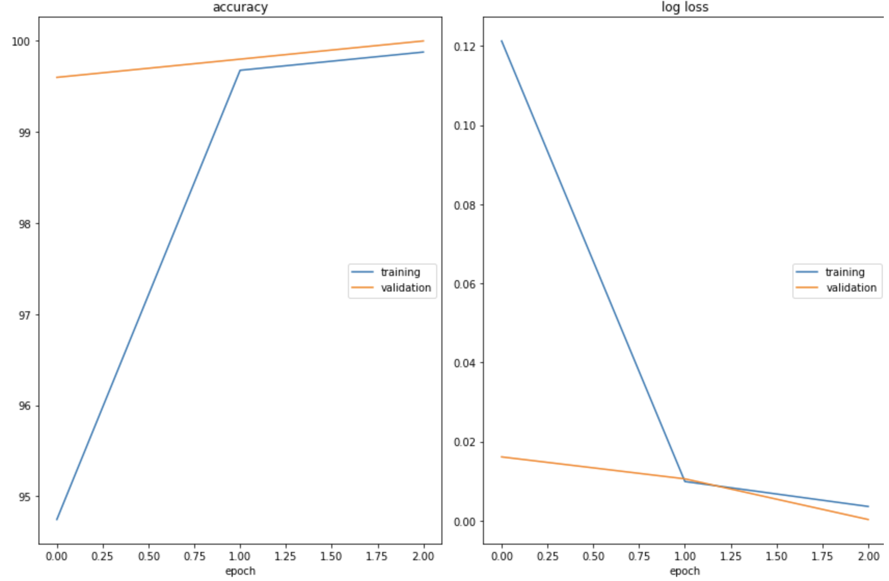

本案例分上下两篇，上篇介绍肠癌图像分类任务的本地baseline，下篇介绍将肠癌图像分类任务移植到FATE上，实现联邦学习。
任务目标
使用FATE开发新的组件，实现图像横向联邦学习
证明联邦学习有效
任务介绍 该任务将开发基于结肠的组织病理学图像正确判断是良性组织或者结肠癌的二分类算法。
数据集 数据集来自于https://www.kaggle.com/datasets/andrewmvd/lung-and-colon-cancer-histopathological-images的colon_image_sets
本任务数据集由2个类别组成的10000张符合HIPAA标准的结肠组织病理学图像。所有图像的尺寸为$768 768 3$，为jpeg文件格式。
为了进行实验，需要对数据进行划分：步骤如下：
数据shuffle。
分为五个子集，包含三份训练集子集，命名为Train_1, Train_2, Train_3，训练集子集各三千张图像，一份验证集和一份测试集各500张，分别命名为val和test。（这里我没有对图像本身进行改动，而是生成了一个excel，每个sheet包含image_path和type两列，分别对应图像的位置和label，一共有input1，input2，input3，val和test五个sheet页）
三份训练数据和一份测试数据对应的三种类型的图像数量如下：
Data
结肠癌组织
良性组织
总计
Train_1
1505
1495
3000
Train_2
1467
1533
3000
Train_3
1515
1485
3000
Test
253
247
500
总计（不算Test）
4487
4513
/
算法 为了保证单一变量影响，在本地训练和联邦训练的模型参数相同，具体参数如下表
key
val
平台
kaggle
算法
基于ImageNet1K预训练的vgg16模型
Epoch
2
Batch Size
16 or 32
Optimizer
Adam
Learning Rate
1e-5
Loss
CrossEntropyLoss
Metrics
Accuracy
实验步骤
使用全部训练集在本地进行训练，在测试集进行模型评估。
分别使用三份训练集子集在本地进行训练，在测试集进行模型评估。
使用FATE对三份训练集子集进行联邦训练，在测试集上进行模型评估。
Code
这里只列出重要的code，详细code可以参见：https://www.kaggle.com/code/guoyujian/colon-cancer101
define params EPOCHS = 2 BATCH_SIZE = 32 lr = 1e-5 device = torch.device('cuda' if torch.cuda.is_available() else 'cpu' ) print (device)
加载数据 metadata_path = '../input/input-colon/colon_inputs.xls' df1 = pd.read_excel(metadata_path, sheet_name = 'input1' ) df2 = pd.read_excel(metadata_path, sheet_name = 'input2' ) df3 = pd.read_excel(metadata_path, sheet_name = 'input3' ) df4 = pd.read_excel(metadata_path, sheet_name = 'val' ) df5 = pd.read_excel(metadata_path, sheet_name = 'test' ) df = pd.concat([df1, df2, df3]) df.head()
images_all_over = [] for item in df['image_path' ]: item = images_all_over.append('../input/lung-and-colon-cancer-histopathological-images/lung_colon_image_set/colon_image_sets/' + item) labels_all_over = df['type' ].to_list() print (f'len images_all_over: {len (images_all_over)} ; len labels_all_over: {len (labels_all_over)} ; ' )images_1_over = [] for item in df1['image_path' ]: item = images_1_over.append('../input/lung-and-colon-cancer-histopathological-images/lung_colon_image_set/colon_image_sets/' + item) labels_1_over = df1['type' ].to_list() images_2_over = [] for item in df2['image_path' ]: item = images_2_over.append('../input/lung-and-colon-cancer-histopathological-images/lung_colon_image_set/colon_image_sets/' + item) labels_2_over = df2['type' ].to_list() images_3_over = [] for item in df3['image_path' ]: item = images_3_over.append('../input/lung-and-colon-cancer-histopathological-images/lung_colon_image_set/colon_image_sets/' + item) labels_3_over = df3['type' ].to_list() images_val_over = [] for item in df4['image_path' ]: item = images_val_over.append('../input/lung-and-colon-cancer-histopathological-images/lung_colon_image_set/colon_image_sets/' + item) labels_val_over = df4['type' ].to_list() images_test_over = [] for item in df5['image_path' ]: item = images_test_over.append('../input/lung-and-colon-cancer-histopathological-images/lung_colon_image_set/colon_image_sets/' + item) labels_test_over = df5['type' ].to_list()
shuffle_dataset = np.hstack((np.array(images_all_over).reshape(-1 , 1 ), np.array(labels_all_over).reshape(-1 , 1 ))) np.random.shuffle(shuffle_dataset) images_all_over = shuffle_dataset[:, 0 ].tolist() labels_all_over = shuffle_dataset[:, 1 ].astype(int ).tolist()
class Colon_Dataset (Dataset ): def __init__ (self, image_path, target, train_transform = None , test_transform = None ): super ().__init__() self.image_path = image_path self.target = target self.train_transform = train_transform self.test_transform = test_transform self.transform = None def __len__ (self ): return len (self.image_path) def __getitem__ (self, index ): path = self.image_path[index] image = cv2.imread(path) label = self.target[index] if self.transform: image = self.transform(image) return image, label def train_mode (self ): self.transform = self.train_transform def test_mode (self ): self.transform = self.test_transform
train_transform = transforms.Compose([ transforms.ToPILImage(), transforms.Resize(256 ), transforms.CenterCrop(224 ), transforms.RandomHorizontalFlip(), transforms.RandomRotation(10 ), transforms.ColorJitter(), transforms.ToTensor(), ]) test_transform = transforms.Compose([ transforms.ToPILImage(), transforms.Resize(256 ), transforms.CenterCrop(224 ), transforms.ToTensor() ])
colon_all_dataset = Colon_Dataset(images_all_over, labels_all_over, train_transform, test_transform) train_loader = DataLoader(colon_all_dataset, batch_size=BATCH_SIZE) colon_1_dataset = Colon_Dataset(images_1_over, labels_1_over, train_transform, test_transform) colon_2_dataset = Colon_Dataset(images_2_over, labels_2_over, train_transform, test_transform) colon_3_dataset = Colon_Dataset(images_3_over, labels_3_over, train_transform, test_transform) colon_val_dataset = Colon_Dataset(images_val_over, labels_val_over, train_transform, test_transform) colon_test_dataset = Colon_Dataset(images_test_over, labels_test_over, train_transform, test_transform) train_1_loader = DataLoader(colon_1_dataset, batch_size=BATCH_SIZE) train_2_loader = DataLoader(colon_2_dataset, batch_size=BATCH_SIZE) train_3_loader = DataLoader(colon_3_dataset, batch_size=BATCH_SIZE) val_loader = DataLoader(colon_val_dataset, batch_size=BATCH_SIZE) test_loader = DataLoader(colon_test_dataset, batch_size=BATCH_SIZE)
define a model Model = models.vgg16(pretrained=True ) Model.classifier[6 ] = nn.Linear(in_features=4096 , out_features=2 , bias=True ) Model = Model.to(device) optimizer = torch.optim.Adam(Model.parameters() , lr = lr) scheduler = torch.optim.lr_scheduler.MultiStepLR(optimizer, milestones=[10 , 25 , 50 , 75 , 120 ], gamma=0.5 ) loss_fn = nn.CrossEntropyLoss()
train&val def train_one_epoch (train_loader, model, criterion, optimizer, device ): model.train() colon_all_dataset.train_mode() colon_1_dataset.train_mode() colon_2_dataset.train_mode() colon_3_dataset.train_mode() colon_val_dataset.train_mode() size = len (train_loader.dataset) num_batches = len (train_loader) losses, correct = 0 , 0 for batch, (x, y) in enumerate (tqdm(train_loader)): device = torch.device(device) x, y = x.to(device), y.to(device) optimizer.zero_grad() pred = model(x) loss = criterion(pred, y.long().squeeze()) current = batch * len (x) loss.backward() optimizer.step() y_pred, y_true = torch.argmax(pred, axis=1 ), y.long().squeeze() correct += (y_pred == y_true).type (torch.float ).sum ().item() losses += loss.item() correct /= size losses /= num_batches print (f"Train: Accuracy: {(100 *correct):>0.2 f} %, Avg loss: {losses:>5f} " ) return losses, correct
def valid_one_epoch (valid_loader, model, criterion, device ): model.eval () colon_all_dataset.train_mode() colon_1_dataset.train_mode() colon_2_dataset.train_mode() colon_3_dataset.train_mode() colon_val_dataset.train_mode() size = len (valid_loader.dataset) num_batches = len (valid_loader) losses, correct = 0 , 0 with torch.no_grad(): for batch, (x, y) in enumerate (tqdm(valid_loader)): device = torch.device(device) x, y = x.to(device), y.to(device) pred = model(x) loss = criterion(pred, y.long().squeeze()) current = batch * len (x) y_pred, y_true = torch.argmax(pred, axis=1 ), y.long().squeeze() correct += (y_pred == y_true).type (torch.float ).sum ().item() losses += loss.item() correct /= size losses /= num_batches print (f"Valid: Accuracy: {(100 *correct):>0.2 f} %, Avg loss: {losses:>5f} \n" ) return losses, correct
def train_valid (train_loader,valid_loader, model, criterion, optimizer, scheduler, device, part = None ): liveloss = PlotLosses() tolerance = 0 best_loss = np.inf best_epoch = 0 best_acc = 0 print ('Starting Training...\n' ) for epoch in range (0 , EPOCHS): logs = {} print (f"------------------------------- Epoch {epoch + 1 } -------------------------------" ) train_loss, train_acc = train_one_epoch(train_loader, model, criterion, optimizer, device) valid_loss, valid_acc = valid_one_epoch(valid_loader, model, criterion, device) scheduler.step() if valid_loss < best_loss and valid_acc > best_acc: best_epoch = epoch + 1 best_loss = valid_loss best_acc = valid_acc if part: torch.save(model, f"vgg_ep{best_epoch} _part{part} .pth" ) else : torch.save(model, f"vgg_ep{best_epoch} .pth" ) if valid_acc < best_acc: tolerance += 1 logs['log loss' ] = train_loss logs['accuracy' ] = train_acc*100 logs['val_log loss' ] = valid_loss logs['val_accuracy' ] = valid_acc*100 liveloss.update(logs) liveloss.send() print ("Done!" )
train_valid(train_loader,val_loader, Model, loss_fn, optimizer, scheduler, device)
可以看到模型拟合的很快

train_valid(train_1_loader,val_loader, Model, loss_fn, optimizer, scheduler, device, part = 1 ) train_valid(train_2_loader,val_loader, Model, loss_fn, optimizer, scheduler, device, part = 2 ) train_valid(train_3_loader,val_loader, Model, loss_fn, optimizer, scheduler, device, part = 3 )
模型评估 这里注意的是不需要先对pred进行softmax，在计算loss，而是直接计算loss：
Ref:pytorch 计算 CrossEntropyLoss 和 softmax 激活层
def test_model (test_loader, model, criterion, device ): model.eval () cervical_test_dataset.test_mode() true_labels = [] pred_labels = [] scores = [] size = len (test_loader.dataset) num_batches = len (test_loader) print (f'size:{size} ; num_batches:{num_batches} ' ) losses, correct = 0 , 0 with torch.no_grad(): for batch, (x, y) in enumerate (tqdm(test_loader)): device = torch.device(device) x, y = x.to(device), y.to(device) pred = model(x) loss = criterion(pred, y.long().squeeze()) current = batch * len (x) scores += pred.tolist() y_pred, y_true = torch.argmax(pred, axis=1 ), y.long().squeeze() correct += (y_pred == y_true).type (torch.float ).sum ().item() loss, current = np.round (loss.item(), 5 ), batch * len (x) true_labels += y_true.detach().cpu().tolist() pred_labels += y_pred.detach().cpu().tolist() losses += loss.item() correct /= size losses /= num_batches print (f"Test: Accuracy: {(100 *correct):>0.2 f} %, Avg loss: {losses:>5f} \n" ) return np.array(true_labels), np.array(pred_labels), np.array(scores)
test_model_obj = torch.load('模型文件path' ) test_model_obj = test_model_obj.to(device) test_model(test_loader, test_model_obj, loss_fn, device)
实验结果
使用的数据
评估结果
全部训练数据（Train_1+Train_2+Train_3）
Accuracy: 99.60%, Avg loss: 0.011775
Train_1
Accuracy: 73.20%, Avg loss: 0.641481
Train_2
Accuracy: 71.40%, Avg loss: 0.649055
Train_3
Accuracy: 56.80%, Avg loss: 0.654335
实验分析 见下篇